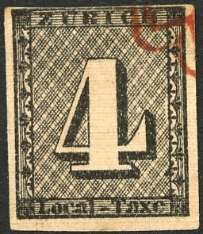
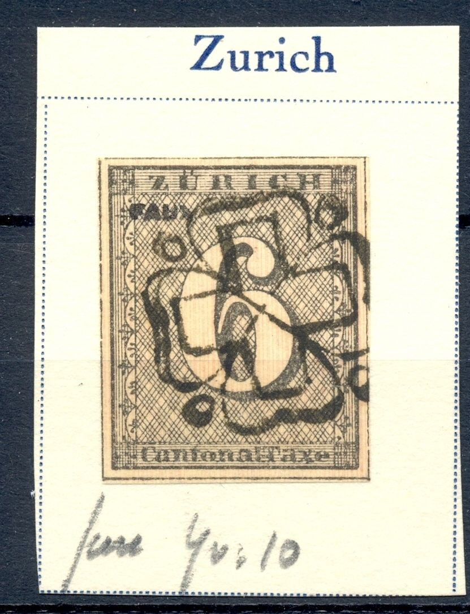
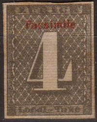
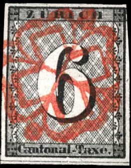
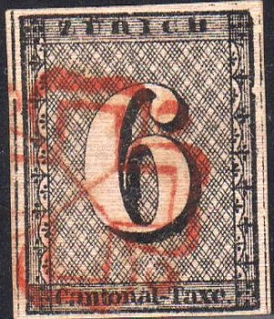

{kind=link}



Return To Catalogue - Zurich forgeries, part 1 - Zurich - Switzerland overview
Note: on my website many of the
pictures can not be seen! They are of course present in the
catalogue;
contact me if you want to purchase the catalogue.
The forger Fournier is known to have made 3 different types of forgeries of the 4 r value and also 3 different forgeries of the 6 r value.
Fournier forgeries, examples:
Other possible Fournier forgeries, the first forgery has a 'FAUX' overprint:


Images obtained from Augusto Bulgarelli

Two forgeries taken from a Fournier Album.

Two possible Fournier forgeries, the 'L' of 'Local' is placed too
far to the left.
For more information on Switzerland Fournier forgeries, click here.
Some forgeries with a violet 'FACSIMILE' or 'Facsimile' overprint:


These forgeries are possibly made by the forger Champion

A forgery with a red 'Facsimile' overprint. This is actually a
cut out from a 'Stamp on a stamp' produced by the chocolate
manufacturer Tobler. The inscription around this cut out read:
"Old and new postage stamps Zurich Canton post 1843 TOBLER
Swiss Milk Chocolate, No 675 - Serie 57 - No 673-684'.

Some dangerous forgeries:

(Forgery of the 4 r type 1


(Forgeries of the 6 r type 1, type 2 and type 3)

4 r forgery with a space between "Loc" and
"al".
Sperati made forgeries all the 5 types of the 4 rp and all 5 types of the 6 rp (produced somewhere between 1930 and 1939).

Sperati forgery of type 1 of the 4 r value


Sperati forgeries of type 2 of the 4 r value. There is a weakness
in the left outer frame line besides the third ornament counted
from the top down.

Sperati forgery of type 3 of the 4 r value

Sperati forgery of type 4 of the 4 r value.

Sperati forgery of type 5 of the 4 r value

Sperati forgery of type 1 of the 6 r value. There is a break in
the upper frame line above the 'RI' of 'ZURICH'. The left hand
side of the '6' has several breaks in it.


Sperati forgeries of type 2 of the 6 r value.

Sperati forgery of type 3 of the 6 r value.

Sperati forgery of type 4 of the 6 r value. The upper frameline
is bent in this forgery.

Sperati forgeries of type 5 of the 6 r value.


(Some modern Peter Winter forgery)
Peter Winter made forgeries in the late 20th century. I posess a 4 r Winter forgery with the '18' in the left lower corner and '43' in the right lower corner (it resembles a proof, apparantly). I also posess a forgery of the 6 r value made by Winter, the white margins are very large (too large I think). These two forgeries do not look very convincing (they look too modern).


(Other Winter forgeries)
I have my doubts about the following stamps:


A Menke-Huber postcard with replicas
of Geneva, Zurich,
Vaud and Basel.
The firm Henry Heller also issued the same cards.

A Menke-Huber postcard with replicas
of Geneva, Zurich
and Switzerland.

Possible cuts from these Menke-Huber
postcards
{kind=link}
{kind=link}
{kind=link}
{kind=link}